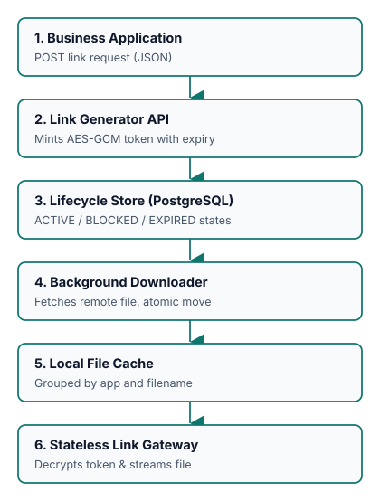

Java & JVM Engineering
Java from version 6 to 25 in production codebases. Java Memory Model, concurrency, collections and generics, and class loading from Oracle. Spring Boot back-end services at Kuehne+Nagel.
Tallinn, Estonia
Senior Software Engineer | Java, Distributed Systems & AI Engineering
Senior Software Engineer specialising in Java backend development, distributed systems, event-driven architecture, enterprise integration, and production infrastructure. Professional experience at Kuehne+Nagel, Oracle, and Taxify (Bolt), complemented by expertise in Python, Rust, and AI-powered engineering tools.

Java from version 6 to 25 in production codebases. Java Memory Model, concurrency, collections and generics, and class loading from Oracle. Spring Boot back-end services at Kuehne+Nagel.
Background document processing with cache consistency across several schedulers at Kuehne+Nagel. Distributed testing infrastructure of 60+ lab computers at Oracle.
Asynchronous message routing over RabbitMQ with failed-message handling. Idempotent, checkpointed processing in a personal indexing pipeline.
XML transformation pipeline with XSLT (Saxon) and Java extension functions. Plugin classloading with reload on redeploy. Secure, time-limited document links encrypted with AES-GCM.
Docker and Kubernetes deployments, with Jenkins and GitLab CI/CD automation at Kuehne+Nagel. Cloud services on AWS, Azure and Google App Engine at Taxify.
Test-suite stabilisation, regular and nightly test-run analysis, and bug investigation at Oracle. Idempotent writes and retry-safe processing in personal projects.
Semantic search over a personal messenger archive, with Whisper transcription, Qdrant embeddings and an MCP server for LLM agents. Telegram automation with AI-assisted replies.
Enterprise Java back-end development for iOPM: document processing, asynchronous messaging and integration services, with build and deployment automation.
Technologies in this role: Java, Spring, Spring Boot, RabbitMQ, PostgreSQL, Oracle, JPA, Hibernate, Maven, Docker, Kubernetes, Jenkins, GitLab, Git, Python, React, AES-GCM
High-load back-end services for the Taxify ride-hailing platform, before it was rebranded as Bolt.
Technologies in this role: Node.js, JavaScript, TypeScript, REST, AWS, Azure, Google App Engine, Docker, Redis, Neo4j, Python, PHP, MySQL, nginx
Quality engineering on Java: test development, test-run analysis and the distributed testing infrastructure.
Technologies in this role: Java, JUnit, Jemmy, Mockito, Python, PowerShell, Puppet, Tomcat, JDBC, Swing, JavaFX, Servlet/JSP, SOAP, REST
Senior Java Developer, Software Development & Solutions August 2013 – January 2014
Project "Forward", an information aggregator for the marketing department: requirements, specification, design, quality control, release and support.
Java, JUnit, Spring, Play, GWT, Hibernate, jQuery, Bootstrap, LESS, SASS, MySQL, Oracle DB
C/C++ / Java / Android developer, Bonus Club "All in plus" September 2012 – August 2013
Core library, services and utilities, an update service for POS software, bonus processing software (billing system) and Android UI with REST API calls.
Java, JUnit, Spring, Play, GWT, Hibernate, Servlet/JSP, SOAP, REST, Oracle DB, Tomcat, JIRA, SVN, Android
Software Developer, OAO INRUSKOM November 2005 – February 2007
Database development for railway signalling devices and a user interface for working with the database.
MS SQL, C# .NET
Software Developer, i-Free March 2005 – October 2005
An internal CMS, user interfaces, and automatic download of data from game providers into the company database.
Java, JUnit, C# .NET, MS SQL
Software Engineer intern, Research & Engineering Center of SPb ETU September 2001 – March 2005
Analysis, data processing and data visualisation.
Java, Delphi, C++ Builder, Matlab, SQL
Work project
Time-limited, encrypted links to documents stored on a remote system.
Java 17 · Spring Boot · PostgreSQL · AES-GCM
Work project
Asynchronous XML routing and XSLT transformation with Java extension functions loaded from plugins.
Java · Spring AMQP · RabbitMQ · Saxon XSLT · JDBC
Personal project
A searchable archive of a personal messenger history, with voice messages transcribed and indexed, exposed to LLM agents through an MCP server.
Rust · Python · MTProto · Whisper · PostgreSQL · Qdrant · MCP
Snapshot from 2026-11-27. Language, last commit and CI status are copied from GitHub on that date.
Terminal dual-panel file manager in the style of Far Manager, built with Rust and the ratatui TUI library.
Single-binary tool for screenshots and screen recordings (H.264 MP4), written in Rust.
Rust-first toolkit for Telegram: chat exports, an AI auto-responder, a LightRAG indexer, and DevOps helpers with Prometheus metrics.
Python command-line tool that fetches SonarQube analysis data and issues and writes bilingual Markdown reports.
Reusable Java utility that synchronises access to entities by primary key, similar to row-level database locking, for caches and storage components.
Skills are grouped by area. Each one is marked by where it was used.
Each component opens to show its responsibility. Component names are generic; no production endpoints or internal identifiers are shown.
Messages are routed and transformed asynchronously. Plugins extend the transformation without restarting the service.

Send XML requests through RabbitMQ
Producers of XML requests.
Messages wait until a worker takes them
Decouples producers from processing; messages are not processed inline.
Picks the destination queue per message
Routing is a separate step, so it can change without touching transformations.
XSLT (Saxon) with Java extension functions
Transforms the message. Each plugin jar has its own classloader.
Transformed messages are passed on
Delivery to the consuming systems.
Failed messages are kept, not dropped
Failure handling: a message that cannot be processed is not lost.
Concepts: delivery guarantees, failure handling. Case study
Time-limited, encrypted links let a gateway serve documents without a lookup. Background jobs keep the local store in step with link lifetimes.

Requests a time-limited link to a document
The caller; it never receives the remote document location.
Issues AES-GCM links with their own expiry
Creates links. The expiry is part of the encrypted link.
Stores link records
The record of issued links, used by background jobs.
Fetches the document into the local store
Runs outside the request path.
Holds documents until their links expire
The cache that background jobs keep consistent.
Decrypts the link and streams the document
Stateless: it validates the link itself and needs no database lookup.
Remove expired documents on each scheduler
Keep the cache consistent with link lifetimes.
Concepts: security, cache consistency, distributed coordination. Case study
A personal project. Sync, transcription and indexing run as separate workers, and an MCP server exposes search to LLM agents.

History is fetched over the MTProto API
The source of messages.
Backs off on flood-wait; bounded retries
Writes messages and chats to PostgreSQL.
Messages, chats and the transcription queue
The system of record for the archive.
Claims rows with SKIP LOCKED; runs Whisper
Lets several workers share one queue.
Batched embeddings; checkpoint after upserts
Builds the vector index.
Vectors with deterministic UUIDv5 point IDs
Stores embeddings; the same message always maps to the same point.
Search over stdio and HTTP for LLM agents
The interface for LLM agents.
Concepts: idempotency, eventual consistency, distributed coordination, failure handling. Case study
Specialist in Computer Science, Saint-Petersburg Electrotechnical University "LETI"
1999 – 2005
Programming Olympiad, Travelling
Email: super.denis@gmail.com
Also on Facebook.
Each version uses the same verified facts, with a different selection of skills and projects.